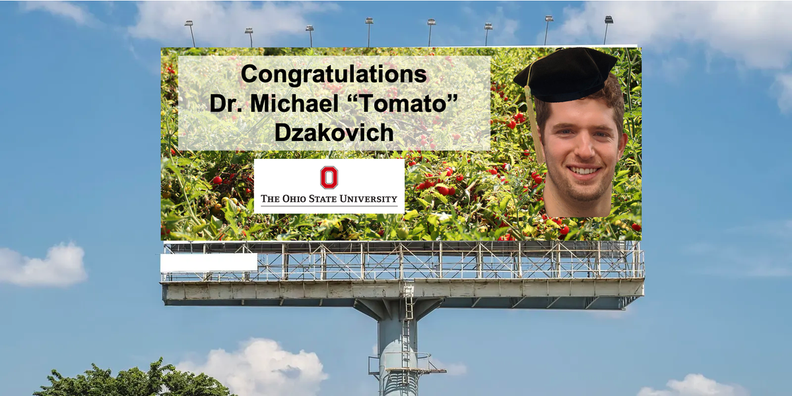
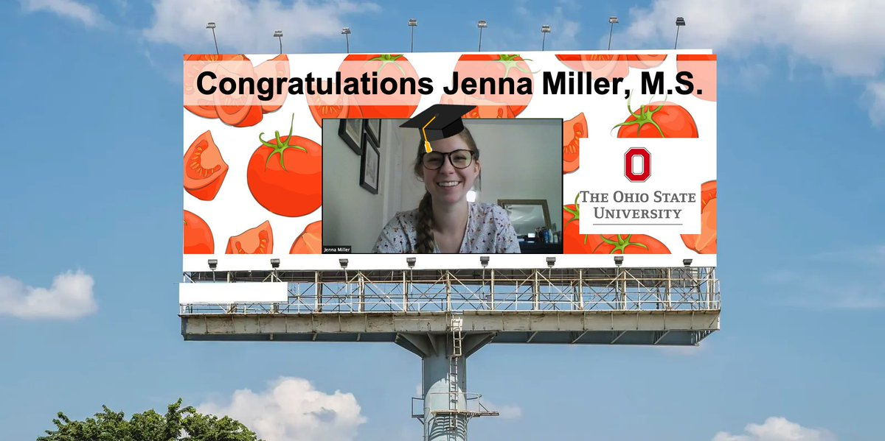
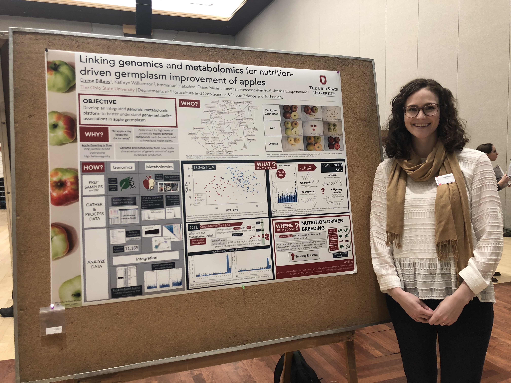
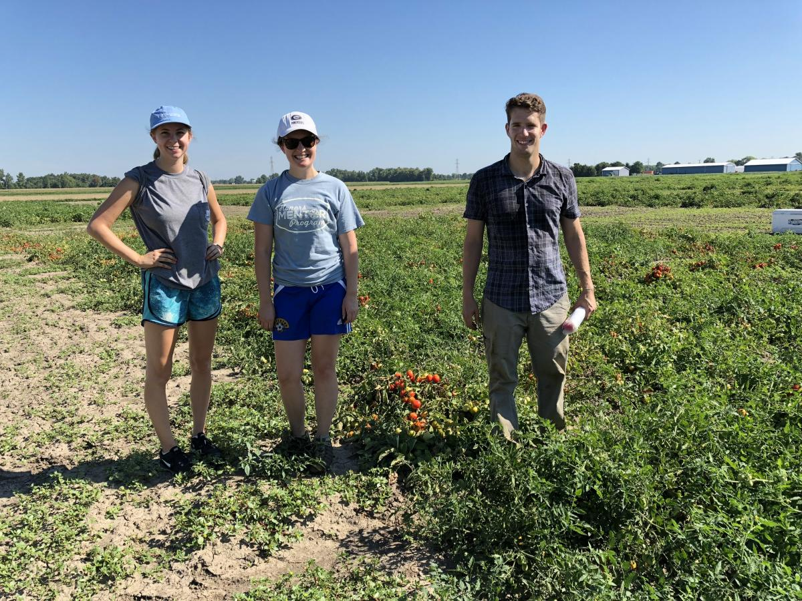
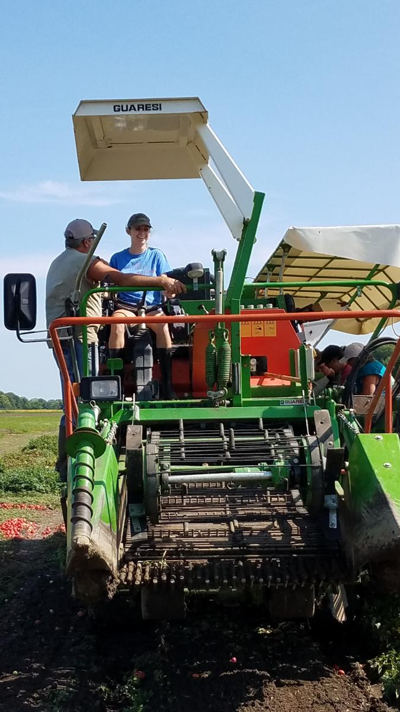
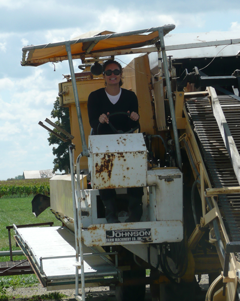
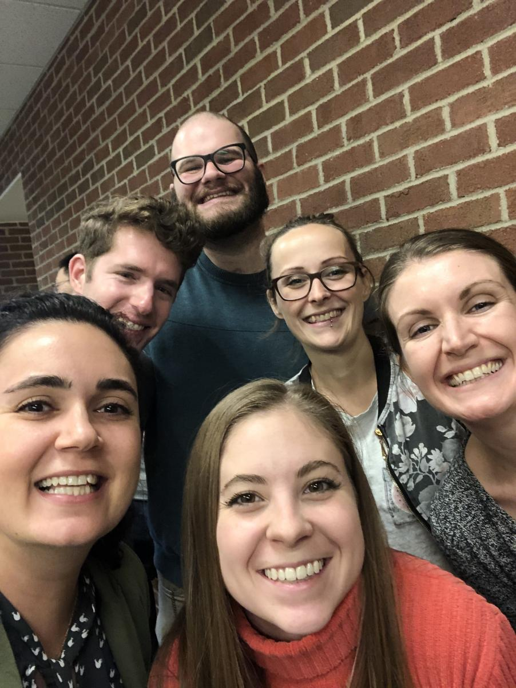
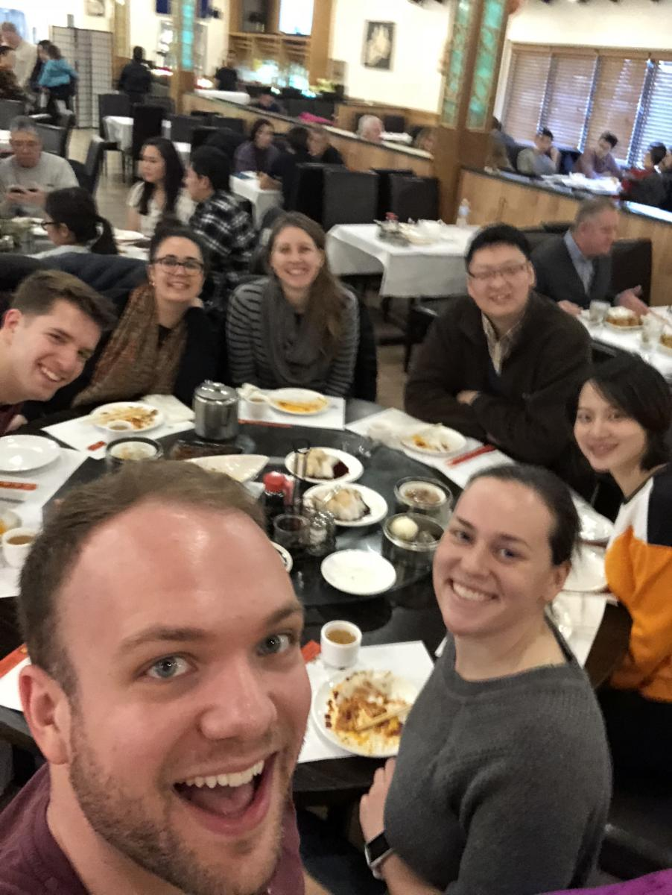

Work fun stuff:
 A selection of apples to taste from Diane Miller. We loved the MAIA advanced selections, especially #3 and #7
A selection of apples to taste from Diane Miller. We loved the MAIA advanced selections, especially #3 and #7
JL and Maria take lab glamour shots. November 2020.
A COVID tomato harvest in Fremont, OH, September 2020. L to R: Maria, JL, Jess

Michael completes his Ph.D.!
 Mallory completes her M.S.!
Mallory completes her M.S.!
 Emmacompeltes her M.S.!
Emmacompeltes her M.S.!

Jenna completes her M.S.!
 The beginning of tomato masks.
The beginning of tomato masks.
JL successfully defends his proposal! March 2020
Michael presents some of his work on tomato alkaloids at the Hayes Graduate Research Forum, March 2020

Emma presents some of her work on apple genome-metabolome integration at the Hayes Graduate Research Forum, March 2020
 A depiction of lab folx as vegetable people driving vegetable cars.
A depiction of lab folx as vegetable people driving vegetable cars.
 A good chunk of #TeamTomato after the OSU HCS Grad Research Symposium, October 2019. L to R (starting in back): JL, David Francis, Sean Fenstemaker, Michael , Eduardo Bernal, Su Subode, Jess
A good chunk of #TeamTomato after the OSU HCS Grad Research Symposium, October 2019. L to R (starting in back): JL, David Francis, Sean Fenstemaker, Michael , Eduardo Bernal, Su Subode, Jess
 The Cooperstone lab at the Ohio Mass Spec and Metabolomics Symposium, October 2019. L to R (starting back row): Emma, JL, Jenna, Michael, Jess, Mallory, Lara.
The Cooperstone lab at the Ohio Mass Spec and Metabolomics Symposium, October 2019. L to R (starting back row): Emma, JL, Jenna, Michael, Jess, Mallory, Lara.
 The HCS part of the Cooperstone Lab at the HCS Grad Research Symposium October 2018, Wooster, Ohio. L-to-R: Michael, Emma, Jess, TJ
The HCS part of the Cooperstone Lab at the HCS Grad Research Symposium October 2018, Wooster, Ohio. L-to-R: Michael, Emma, Jess, TJ

Harvesting tomatoes in Fremont, Ohio, September 2018. L-to-R: Jenna, Mallory, Michael

Jenna drives the tomato harvester, September 2018, Fremont, Ohio
 Michael (front) teaching Jenna (right) and Mallory (left hidden) to use unripe tomato to remove tomato harvesting gunk from your hands, September 2018, Fremont, Ohio
Michael (front) teaching Jenna (right) and Mallory (left hidden) to use unripe tomato to remove tomato harvesting gunk from your hands, September 2018, Fremont, Ohio
 Michael enjoying processing tomatoes, September 2018, Columbus, Ohio
Michael enjoying processing tomatoes, September 2018, Columbus, Ohio
Matt Teegarden becomes Dr. Matt Teegarden, May 2018
 Matt looking happy since he's around a bunch of actual berries, September 2017, Columbus, Ohio
Matt looking happy since he's around a bunch of actual berries, September 2017, Columbus, Ohio
 Matt picks black raspberries at Stokes Berry Farm, summer 2015, Wilmington, Ohio
Matt picks black raspberries at Stokes Berry Farm, summer 2015, Wilmington, Ohio

Jess drives the tomato harvester, circa 2009, Fremont, Ohio
Non-work fun stuff:
 A Cooperstone/Francis + affiliates socially distanted graduation party at Highbanks Metro Park for Emma, Jenna, Mallory, Michael, and Eduardo Bernal, August 2020.
A Cooperstone/Francis + affiliates socially distanted graduation party at Highbanks Metro Park for Emma, Jenna, Mallory, Michael, and Eduardo Bernal, August 2020.
 Celebrating the Lunar New Year with dim sum and the Kopec lab, L to R: Emma, Mallory, Jess, Rachel, Jenna, Haley Chatelaine, Maddie Stern, Djawed Bennouna, JL, and Michael.
Celebrating the Lunar New Year with dim sum and the Kopec lab, L to R: Emma, Mallory, Jess, Rachel, Jenna, Haley Chatelaine, Maddie Stern, Djawed Bennouna, JL, and Michael.
Jess wins first place in the 'adult' category for best gingerbread house at the Franklin Park Conservatory with her gingerbread greenhouse. Note the fondant vegetables.
 Saying goodbye to Lara before she heads back to Germany, December 2019. L to R: JL, Mallory, Michael, Jess, Jenna, Lara, Emma
Saying goodbye to Lara before she heads back to Germany, December 2019. L to R: JL, Mallory, Michael, Jess, Jenna, Lara, Emma

Thanksgiving with the Food Science Department, November 2019.
 Celebrating Lunar New Year Feb 2019 with dumplings and the Kopec lab & affiliates
Celebrating Lunar New Year Feb 2019 with dumplings and the Kopec lab & affiliates
Pre-holiday get together with sour beers and Indian food, Dec 2018
 Celebrating Emma's birthday with Lebanese food, Nov 2018, L-to-R: Michael, Jenna, TJ, Mallory, Emma, Jess. Center, Emma's cake.
Celebrating Emma's birthday with Lebanese food, Nov 2018, L-to-R: Michael, Jenna, TJ, Mallory, Emma, Jess. Center, Emma's cake.
 Happy Halloween from the worst pipetter in the lab, Nacho (Cooperstone), Oct 2018
Happy Halloween from the worst pipetter in the lab, Nacho (Cooperstone), Oct 2018
 Cooperstone and Kopec labs (and affiliates) having a horticultural adventure apple picking in Fall 2018 at Lynd Farm. L-to-R: Clark, Emma, Haley, Rachel, Melissa, Rosalie, Jess, Maddy, Jenna, Michael. Bo in the back and Inu (dog) in the front.
Cooperstone and Kopec labs (and affiliates) having a horticultural adventure apple picking in Fall 2018 at Lynd Farm. L-to-R: Clark, Emma, Haley, Rachel, Melissa, Rosalie, Jess, Maddy, Jenna, Michael. Bo in the back and Inu (dog) in the front.

Cooperstone and Kopec labs celebrate Chinese New Year with dim sum, February 2018, Columbus, Ohio. L-to-R starting top L: Michael, Jess, Rachel, Bo, Rosalie, Haley and Matt big up front.
 Michael gets 2nd place for Smallest Tomato (with Solanum pimpinellifolium LA1335 from the Tomato Genetics Resource Center) at the Reynoldsburg Tomato Festival, losing to an aborted cherry tomato. You can't see him in this photo but he's looking furious. September 2017
Michael gets 2nd place for Smallest Tomato (with Solanum pimpinellifolium LA1335 from the Tomato Genetics Resource Center) at the Reynoldsburg Tomato Festival, losing to an aborted cherry tomato. You can't see him in this photo but he's looking furious. September 2017